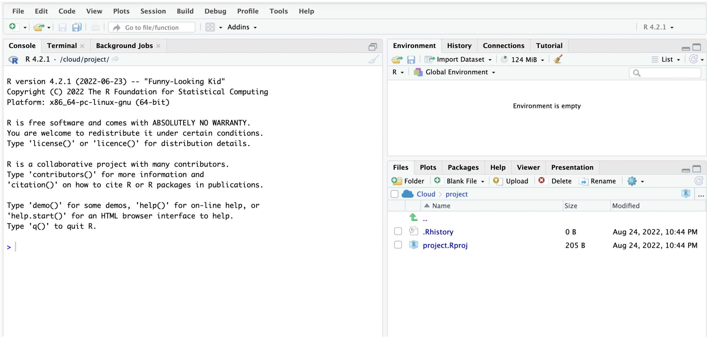

Code
1+1[1] 2Hello, World!It is possible that some of you have heard/seen the phrase, Hello, World!, before. That is usually the first thing you learn in programming, i.e., to learn to write a computer program to print this sentence to screen. In this course, we will not print Hello, World! to the screen. Instead, we will learn how to use R (via RStudio) to perform statistical analyses and to write reports in order to communicate the insights learned from data. While the analysis involves writing computer code, it is in no way going to involve writing computer programs. The goal of today’s lab is to introduce you to R and RStudio. You will learn to access and use RStudio, as well as perform the basic functions regarding statistical analysis. To clarify which is which: R is the name of the programming language itself and RStudio is a convenient interface (Integrated Development Environment or IDE) for working with R. I like to think about R as the car engine and RStudio as a nice driver dashboard. The engine drives the car, but the dashboard makes it easier for the driver to control the car. Most R users work with RStudio.

We will work with the cloud (online) version of RStudio.
Accessing RStudio CloudTo access RStudio online, click on the link https://posit.cloud to create an account or to sign in if you already have an account.
After signing in to R studio, our next step is to create a new project. You can think of a project as a folder or simply a collection of files/files with a specific goal in mind. Our project will be called “MATH 144 Fall 2025”. The labs that you do will be saved in this project. To create the project, you start by clicking on “New Project” and then change the default name (UNTITLED PROJECT) to “MATH 144 Fall 2025”.
Yay! You now have your project ready.
Note that you won’t have to create a project from scratch every time you open RStudio. All labs will be done inside this project that we just created.
In the next section, we explain the meaning of the various panels on your screen.
Your new R studio project interface will look as follows:

Left Panel: The panel on the left is where the action happens. This panel is called the console. Every time you launch RStudio, it will have the same text at the top of the console telling you the version of R that you’re running. Below that information is the symbol ” > “. This is where you enter your commands. When you enter and execute a command, the output will come right below it. These commands and their syntax have evolved over decades (literally) and now provide what many users feel is a fairly natural way to access data, organize, describe, and invoke statistical computations. Try typing 1 + 1 in the console and hit enter.
1+1[1] 2Upper Right Panel: The panel in the upper right is called “environment”. It contains, among other things, the history of the actions or commands that you’ve previously entered.
Bottom Right Panel: The panel in the lower right contains tabs for browsing the files in your project folder, access help files for R functions, install and manage R packages, and inspecting visualizations through the viewer tab. By default, all data visualizations you make will appear directly below the code you used to create them. If you would rather your plots appear in the plots tab, you will need to change your global options.
We want to create a new file (an R script) to write our code. To create a new file, click on the “File” menu, then click on “New File”, and then click on “R Script”. A new tab will open in the left panel. This is where you will write your code. You can save this file by clicking on the “File” menu and then clicking on “Save”. Save the file as “lab_1_Explorations”. If you did this correctly, a new file will appear under the files section (lower right) of the project.
In R, a function is piece of code that performs a specific task. Functions take inputs (called arguments) and return outputs. For example, the mean() function takes a series of numerical values as the input and returns their average. Try running the following code:
mean(3,4,5)[1] 3The inputs of a function are called arguments. Here, we have three arguments (3, 4, and 5). Note that the arguments are separated by commas. The general syntax for a function is function_name(argument1, argument2, ...). In this case, mean is the function name and 3, 4, and 5 are the arguments.
You will learn more about functions and arguments as we progress through the course. For now, it is important to understand that functions are the building blocks of R programming, and they allow you to perform complex tasks with simple commands.
R is an open-source programming language, meaning that users can contribute packages that make our lives easier, and we can use them for free. Packages are simply pre-written code meant to serve specific purposes and may contain other packages inside them. Packages may also contain data sets. Packages are stored in a directory called Library. For most labs in this course, we will use the following two packages:
The tidyverse package is a very popular “umbrella” package which houses a suite of many different R packages: for data wrangling (including tidying) and data visualization.
The openintro package for data and custom functions with the openintro resources. You will notice that the readings frequently refer to data contained in the openintro Package. This is the package.
We now want to install packages in our project. To install a package in R, we can use the function install.packages and the package name as the argument as shown below:
install.packages("package name")We run this command in the console because we only need to install packages once per project. After installing a package, we need to load (activate) it each time we relaunch RStudio.
To install tidyverse, run the following code in the console:
install.packages("tidyverse")Exercise: What code would you use to install the openintro package? Install the package.
Note: To launch (activate) the tidyverse package, we use the following command:
library(tidyverse)Why Tidyverse? We are choosing to use the tidyverse package collection because it consists of a set of packages necessary for different aspects of working with data, anything from loading data to wrangling data to visualizing data to analyzing data. Additionally, these packages share common philosophies and are designed to work together. The tidyverse workflow makes coding feel like a natural language. You can find more about the packages in the tidyverse at tidyverse.org.
Suppose we want to find the mean of the numbers 23,24,26,19,18,25,21, and 39. You can use the command mean(23,24,...), but this might not be the most efficient way if the list is long. A common thing to do is to create a container to put all these numbers. Such a container is known as a vector. Specifically, this is a numerical vector. See code below for creating a vector consisting of the above list:
x <- c(23,24,26,19,18,25,21, 39)
# We use the symbol '<-' for assigning elements to an object. Here, we are creating a vector and storing it in an object called x. The symbols <- is used for assignment. In R, we use a # to designate a comment (text that should not be evaluated as code). In above chunk, the text after # is a comment. Comments are a good way to document your code.
To find the mean of those numbers, we simply run the command mean(x) as shown below.
mean(x)[1] 24.375To find the median of the numbers, we run the command median(x) as shown below.
median(x)[1] 23.5We can also create a string object (i.e., a series of non-numerical elements or characters). We use quotes for string characters. See below:
y <- c( "Jane", "John", "Jess", "Jeff", "Joe", "Holli", "Henry", "Han")
# We use quotes for strings.Now, try to run the command mean(y):
mean(y)Warning in mean.default(y): argument is not numeric or logical: returning NA[1] NADid you get an error message in red?
Well, programming languages generally produce error messages when you try to perform an inappropriate operation or if there is a mistake in the code. Error messages are a good way to learn what you did wrong. In this case, the mean/average of the object y does not make sense because the entries of y are not numerical.
You can, however, perform other operations on y. For example, you can use the table function to tabulate the entries in y. This may be useful in cases where one is interested in the frequencies of each entry. Run the command below:
table(y)y
Han Henry Holli Jane Jeff Jess Joe John
1 1 1 1 1 1 1 1 This is known as a frequency table. For example, we see that there is only one Jane entry in y. While you could easily count the number of Jane entries in y, the table function is useful when you have bigger data sets.
Delete (or comment out) the mean(y) that you had written earlier.
Create an object (name it income) containing the following numerical elements: 750, 810, 680, 1200, 1500, 1399,1525.
Use R to find the mean and the median of the values in #1 above.